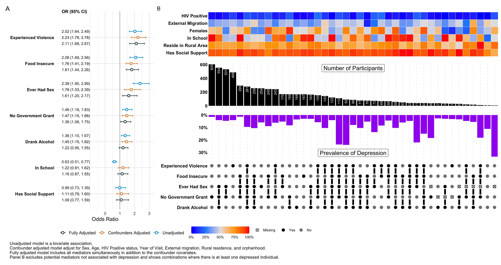

| Component | Specification |
|---|---|
| Outcome | DPBN (binary depression indicator) |
| Candidate mediators | DNKA, ESXC, FDSC, GOVG, VLNC, SCHL, SCSP |
| Covariates in base/fully-adjusted models | SEX, AGE, HIVS, VSTY, EXTMG, RURAL, ORPH |
| Key preprocessing from source workflow | GOVG recoded to ‘No Government Grant’; VSTY derived from VISITDT year and centered. |
| Data source at build time | /Users/Marothi.Letsoalo/Library/CloudStorage/OneDrive-AHRI/Data Science Unit - Marothi/projects/_private_use/data_management/data/co-luminate/adam/dt_multistudies.RData |
Preliminary Mediator Associations Report
Detailed Methods and Findings from Dataset Preparation
Scope
This report reflects the detailed analytical intent and implementation in the dataset preparation source index, specifically:
Mediators vs Outcome.Potential Mediators: Inter-association and Correlation.
This web report presents outcome-association and pairwise inter-association outputs using aggregated objects only (no row-level data stored in this project).
Source Alignment (Dataset Preparation)
The report mirrors the dataset preparation source workflow:
- Recode and harmonize analysis variables from
dt_multistudies. - Fit three logistic models for mediator-to-outcome association.
- Quantify pairwise mediator dependence with OR and Cramer’s V.
- Provide interpretation anchored to fully adjusted and pairwise strength patterns.
Analytical Inputs
Model Specifications (from source workflow)
| Model | Formula | Interpretation |
|---|---|---|
| Unadjusted | DPBN ~ mediator | Crude association per mediator. |
| Base model + single mediator | DPBN ~ mediator + SEX + AGE + HIVS + VSTY + EXTMG + RURAL + ORPH | Mediator association adjusted for prespecified confounding set. |
| Fully adjusted model | DPBN ~ DNKA + ESXC + FDSC + GOVG + VLNC + SCHL + SCSP + SEX + AGE + HIVS + VSTY + EXTMG + RURAL (+ ORPH as specified in source build) | Independent mediator signal with all candidate mediators entered simultaneously. |
Build Metadata
| Field | Value |
|---|---|
| Rendered at | 2026-02-25 16:25:58.608542 |
| Analysis rows | 6428 |
| Mediator pairs | 21 |
Outcome Associations (Unadjusted, Base, Fully Adjusted)
| Potential Mediator | Unadjusted OR (95% CI) | Unadjusted p-value | Base OR (95% CI) | Base p-value | Fully Adjusted OR (95% CI) | Fully Adjusted p-value |
|---|---|---|---|---|---|---|
| Drank Alcohol | 1.36 (1.10, 1.67) | 0.00374 | 1.45 (1.15, 1.82) | 0.00171 | 1.22 (0.95, 1.55) | 0.11121 |
| Ever Had Sex | 2.38 (1.90, 2.99) | < 0.001 | 1.78 (1.33, 2.39) | < 0.001 | 1.61 (1.20, 2.17) | 0.00181 |
| Food Insecure | 2.08 (1.69, 2.56) | < 0.001 | 1.76 (1.41, 2.19) | < 0.001 | 1.81 (1.44, 2.26) | < 0.001 |
| No Government Grant | 1.46 (1.18, 1.83) | < 0.001 | 1.47 (1.15, 1.88) | 0.00197 | 1.36 (1.06, 1.75) | 0.01554 |
| Experienced Violence | 2.02 (1.64, 2.49) | < 0.001 | 2.23 (1.78, 2.78) | < 0.001 | 2.11 (1.68, 2.67) | < 0.001 |
| In School | 0.63 (0.51, 0.77) | < 0.001 | 1.22 (0.91, 1.62) | 0.18029 | 1.16 (0.87, 1.55) | 0.31771 |
| Has Social Support | 0.99 (0.73, 1.39) | 0.96607 | 1.11 (0.79, 1.60) | 0.54238 | 1.09 (0.77, 1.59) | 0.63245 |

Pairwise Inter-association (OR and Cramer’s V)
| Mediator A | Mediator B | Complete N | OR (95% CI) | OR p-value | Cramer’s V |
|---|---|---|---|---|---|
| Ever Had Sex | In School | 6247 | 0.08 (0.07, 0.09) | <0.001 | 0.495 |
| Drank Alcohol | Ever Had Sex | 6247 | 2.85 (2.56, 3.18) | <0.001 | 0.248 |
| Ever Had Sex | No Government Grant | 5949 | 2.68 (2.41, 2.99) | <0.001 | 0.237 |
| No Government Grant | In School | 6126 | 0.47 (0.42, 0.52) | <0.001 | 0.169 |
| Drank Alcohol | No Government Grant | 6126 | 1.72 (1.54, 1.92) | <0.001 | 0.126 |
| Ever Had Sex | Food Insecure | 6247 | 1.63 (1.46, 1.83) | <0.001 | 0.112 |
| Drank Alcohol | In School | 6428 | 0.62 (0.56, 0.69) | <0.001 | 0.111 |
| Drank Alcohol | Experienced Violence | 6428 | 1.54 (1.38, 1.72) | <0.001 | 0.096 |
| Food Insecure | In School | 6428 | 0.70 (0.63, 0.79) | <0.001 | 0.077 |
| In School | Has Social Support | 6425 | 1.60 (1.36, 1.87) | <0.001 | 0.073 |
| Experienced Violence | In School | 6428 | 1.39 (1.23, 1.57) | <0.001 | 0.068 |
| Ever Had Sex | Has Social Support | 6244 | 0.68 (0.58, 0.80) | <0.001 | 0.060 |
| Experienced Violence | Has Social Support | 6425 | 1.55 (1.28, 1.87) | <0.001 | 0.058 |
| Food Insecure | No Government Grant | 6126 | 1.28 (1.14, 1.43) | <0.001 | 0.055 |
| No Government Grant | Experienced Violence | 6126 | 0.79 (0.71, 0.89) | <0.001 | 0.053 |
| No Government Grant | Has Social Support | 6123 | 0.81 (0.68, 0.95) | 0.0104 | 0.033 |
| Ever Had Sex | Experienced Violence | 6247 | 0.87 (0.78, 0.98) | 0.0150 | 0.031 |
| Food Insecure | Has Social Support | 6425 | 1.23 (1.03, 1.47) | 0.0205 | 0.029 |
| Food Insecure | Experienced Violence | 6428 | 0.93 (0.82, 1.04) | 0.2065 | 0.016 |
| Drank Alcohol | Has Social Support | 6425 | 1.09 (0.93, 1.29) | 0.2917 | 0.014 |
| Drank Alcohol | Food Insecure | 6428 | 1.02 (0.91, 1.13) | 0.8006 | 0.003 |
Interpretation
Outcome Association Interpretation
- Fully adjusted associations indicate the strongest independent mediator candidates are: Experienced Violence (aOR 2.11 (1.68, 2.67)); Food Insecure (aOR 1.81 (1.44, 2.26)); Ever Had Sex (aOR 1.61 (1.20, 2.17)); No Government Grant (aOR 1.36 (1.06, 1.75))
- Non-significant in the fully adjusted model: Drank Alcohol, In School, Has Social Support . These results support prioritizing robust signals in mediation pathway testing while retaining weaker variables as supporting covariates where scientifically justified.- Unadjusted estimates are descriptive; fully adjusted estimates should guide prioritization.Pairwise Interpretation
- Ever Had Sex vs In School: OR 0.08, Cramer's V 0.50.
- Drank Alcohol vs Ever Had Sex: OR 2.85, Cramer's V 0.25.
- Ever Had Sex vs No Government Grant: OR 2.68, Cramer's V 0.24.- Inter-association identifies co-patterning among mediators and does not imply causal direction.Correlation Reporting Decision
Correlation heatmap and rho columns are intentionally omitted in this report version.
For binary 2x2 mediator pairs, the correlation measure (phi/rho in this coding) is numerically equivalent to Cramer’s V; therefore, Cramer’s V is retained as the single strength metric.